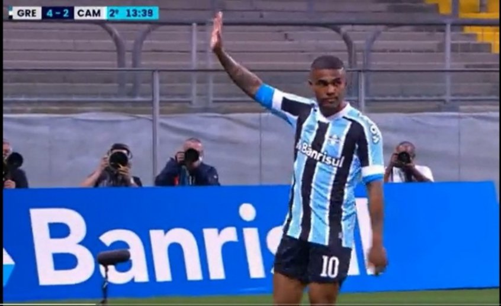

O gremio FBPA é um clube criado no ano de 1903, atualmente esta na primeira divisao do campeonato brasileiro, conta com grandes titulos e grandes jogadores. Segue abaixo eles.

- Titulos
- 2x brasileirao
- 3x libertadores
- 5x copa do brasil
- 42x gauchao
- 1x mundial de clubes
- Idolos
- Renato Gaucho
- Marcelo Grohe
- Luan
- Arce
- Hugo de Leon
- Alcindo
- Geromel
- Foguinho
estadios
O gremio contou com o estadio olimpico do ano de 1954 ate o ano de 2013, quando assim inalgurou a sua atual casa, conhecida como Arena do gremio
com capacidade para ate 55 mil torcedores.
estadio olimpico

arena do gremio
altos e baixos
A equipe do gremio conta com 3 rebaixamentos em sua historia, sendo o mais recente na temporada 20/21, mas apos uma temporada na serie b o time voltou a elite do futebol brasileiro.
como com qualquer outro clube, a equipe do gremio tambem teve titulos perdidos dolorosamente, por exemplo no ano de 2018 quando a equipe ganhava por 2x0 a equipe do river plate na semi-final da libertadores, e acabou levando o empate e sendo eliminado por gols fora de casa. Outro titulo foi na final de uma libertadores no ano de 2007, levando uma goleada da equipe do boca juniors
sobre a atual temporada
na atual temporada a equipe do gremio conquistou o gauchao e segue regular no brasileirao, alem de estar nas oitavas da copa do brasil
apos subir para a elite do futebol brasileiro, o gremio investiu forte no mercado, tendo como sua principal contrataçao o atacante luis suarez